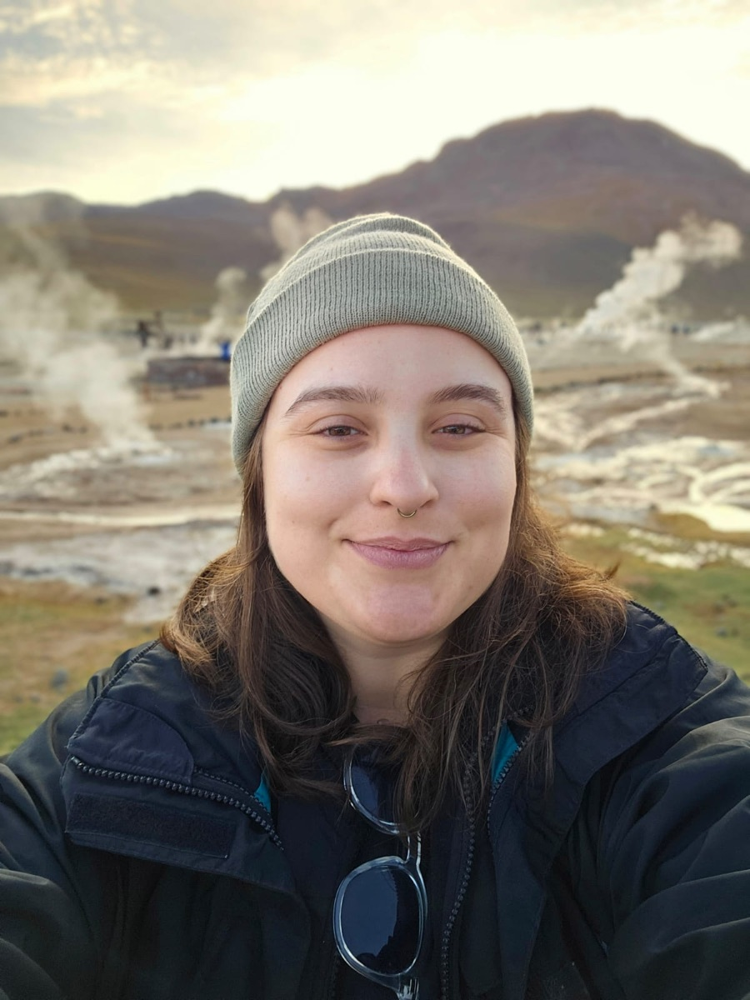
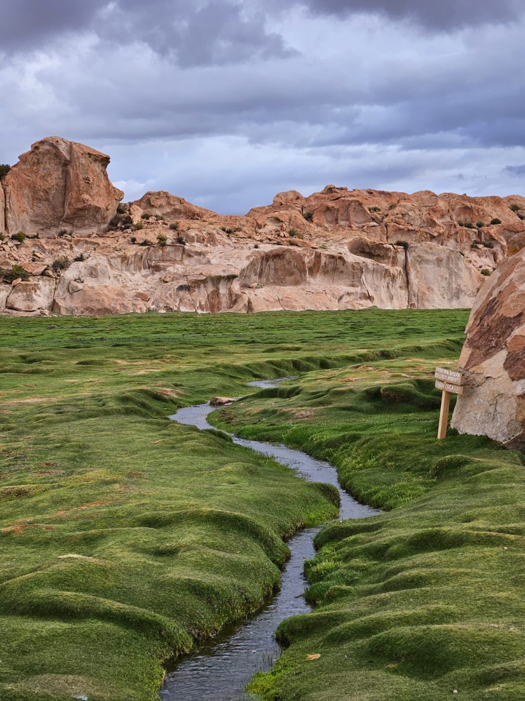
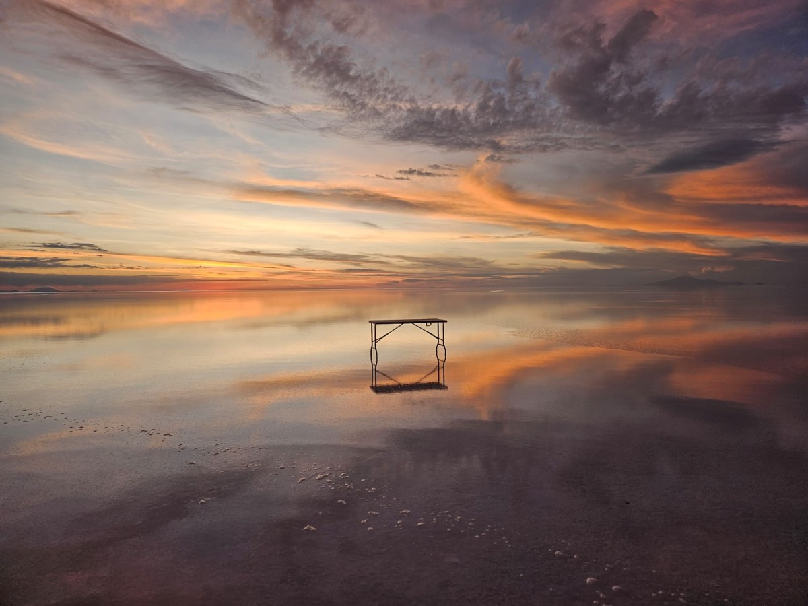
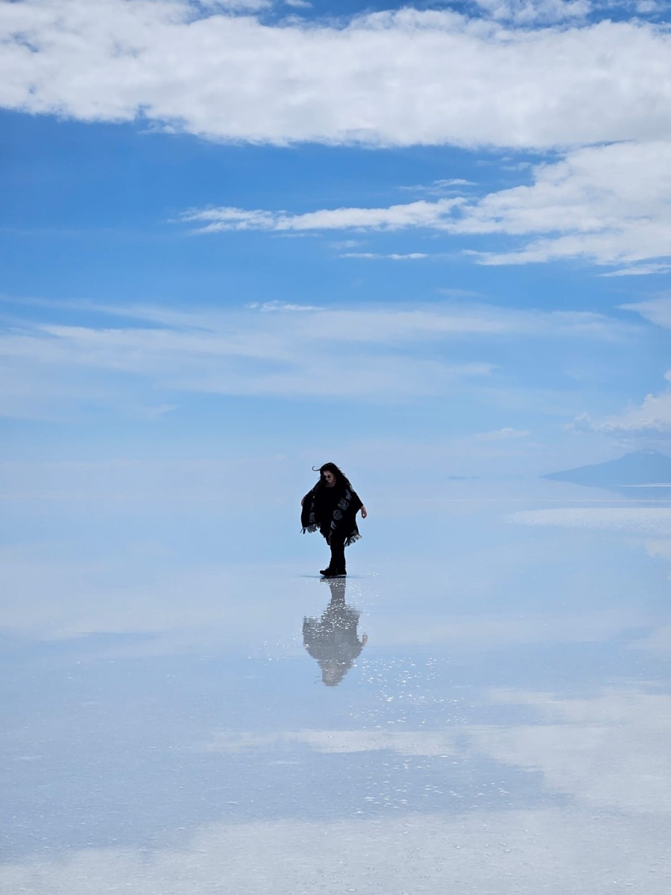
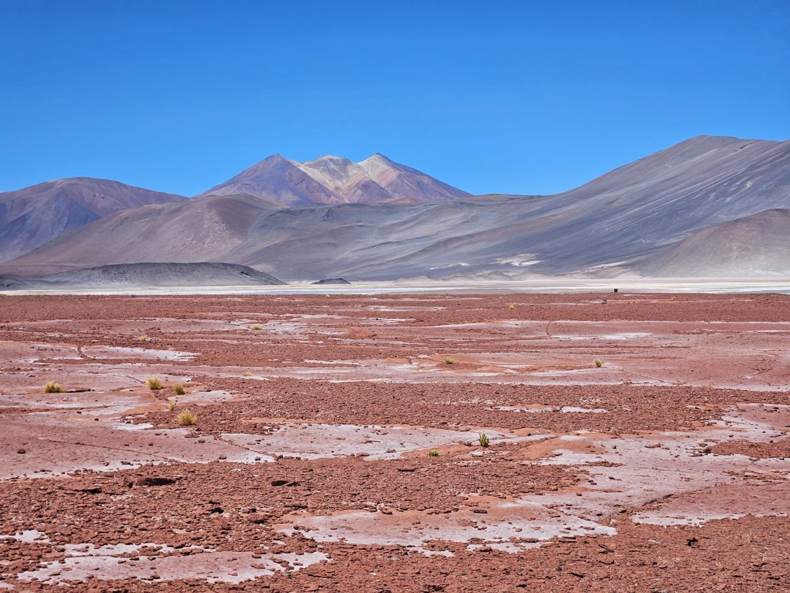
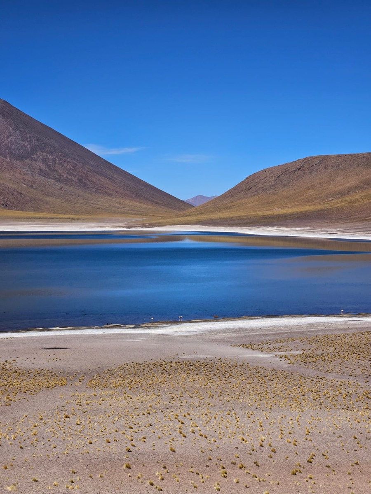
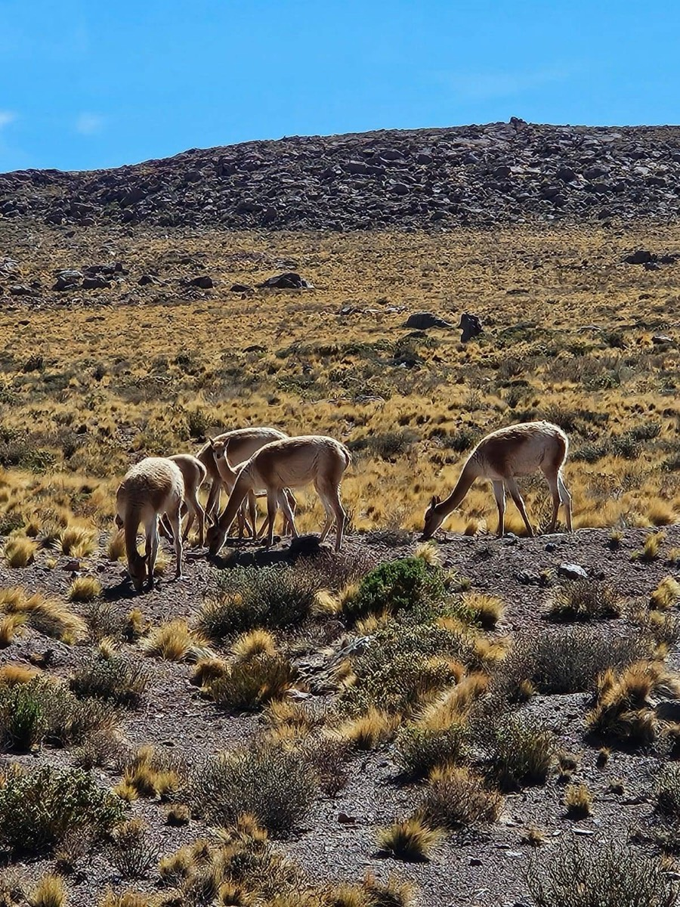
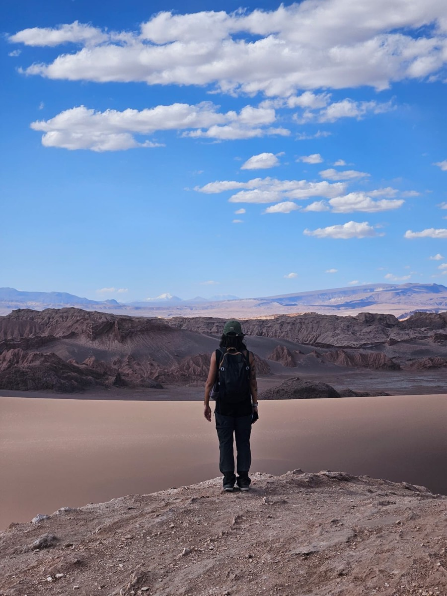
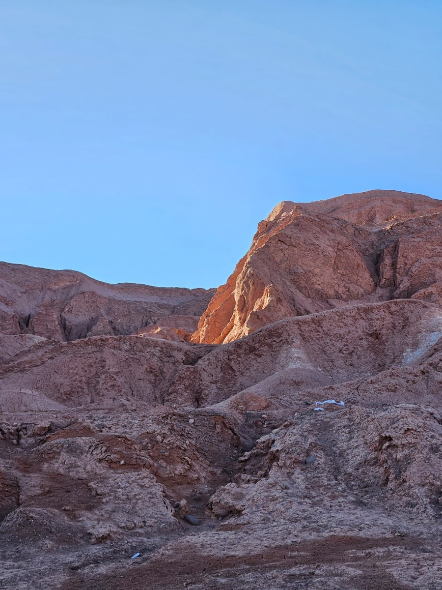
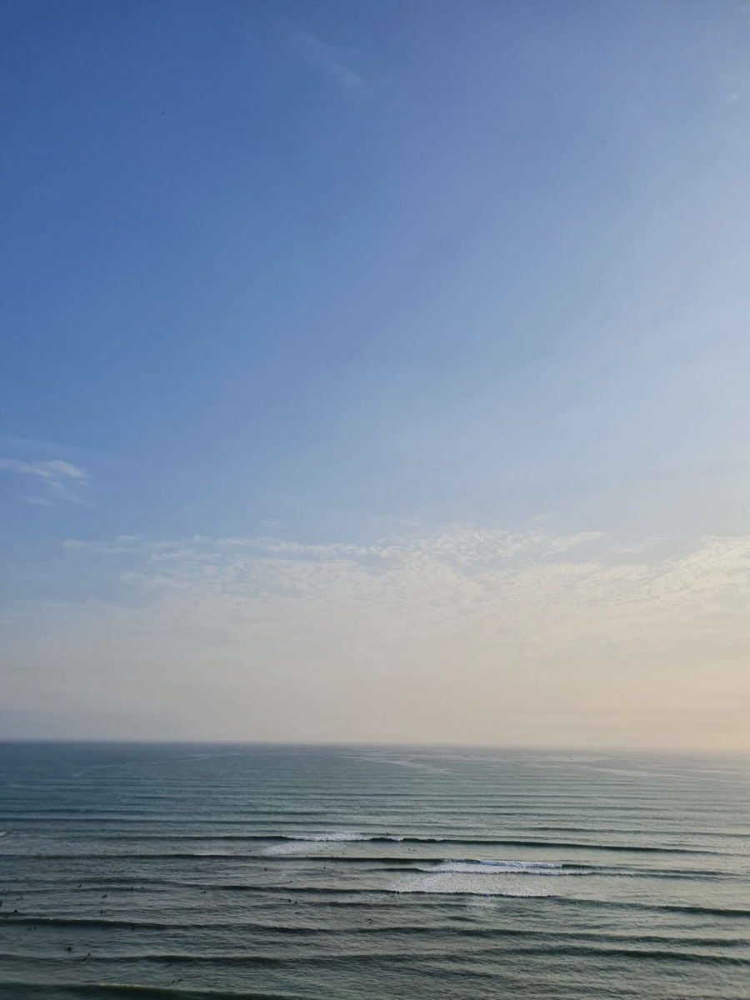

About
I like people, solving problems and taking care of things. In design, those three become one: understanding who's on the other side, finding what's in the way, and making sure the solution actually works for the people using it.

Experience
-
2021 to present
+A Educação · Product Designer
Where the research-led approach that runs through this site took shape: GPA's rebuild, Artemya from scratch.
-
2019 to 2021
Iú Cosmetics · Digital Designer, E-commerce & Experience
Owned design end to end through a full e-commerce platform migration for a DTC beauty brand.
-
2017
Luedtke · Instructional Designer
Designed e-learning courses, and the illustrations, animation and video that went with them.
-
2014 to 2016
Agexcom · Art Direction Intern
My first real design job: digital campaigns, illustration, motion, learning by shipping.
Education
-
MBA
Strategic Design · UNISINOS
2026 to 2027, in progress
-
Postgraduate
Gamification & Digital Marketing · PUC‑PR
2021 to 2022
-
Bachelor's
Digital Communication · UNISINOS
2014 to 2017
Off screen
Off screen, I like things that take time and attention. I take photos, make ceramics and practice contemporary dance. I like how each one makes me pay attention to something different, whether framing, form or movement.
And I travel whenever I can. Everyone says that, I know, but what I look for are places that pull me out of autopilot, like the salt flats and deserts in these photos. All of them are mine.
At home, I take care of Sade and Tofu, my two cats.








